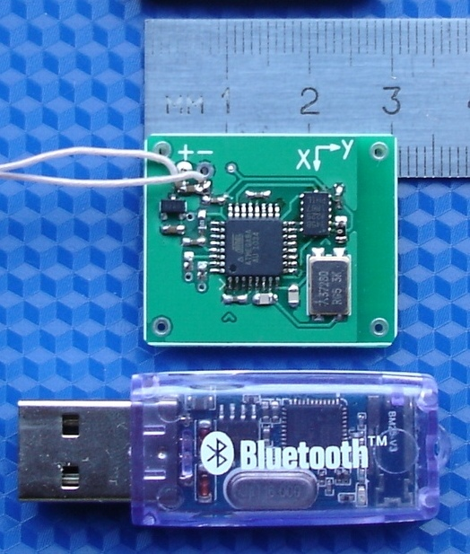
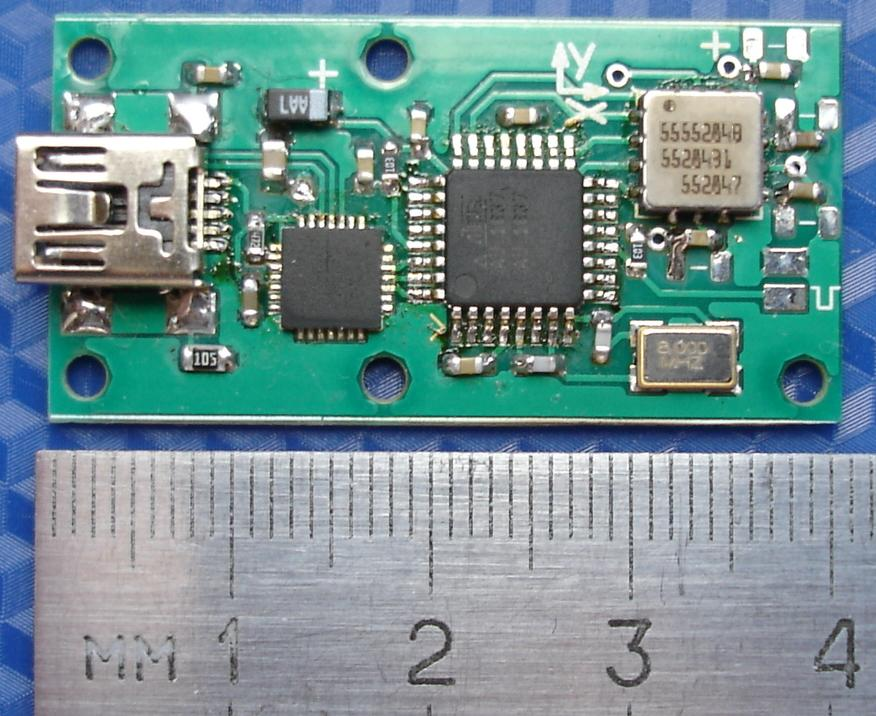
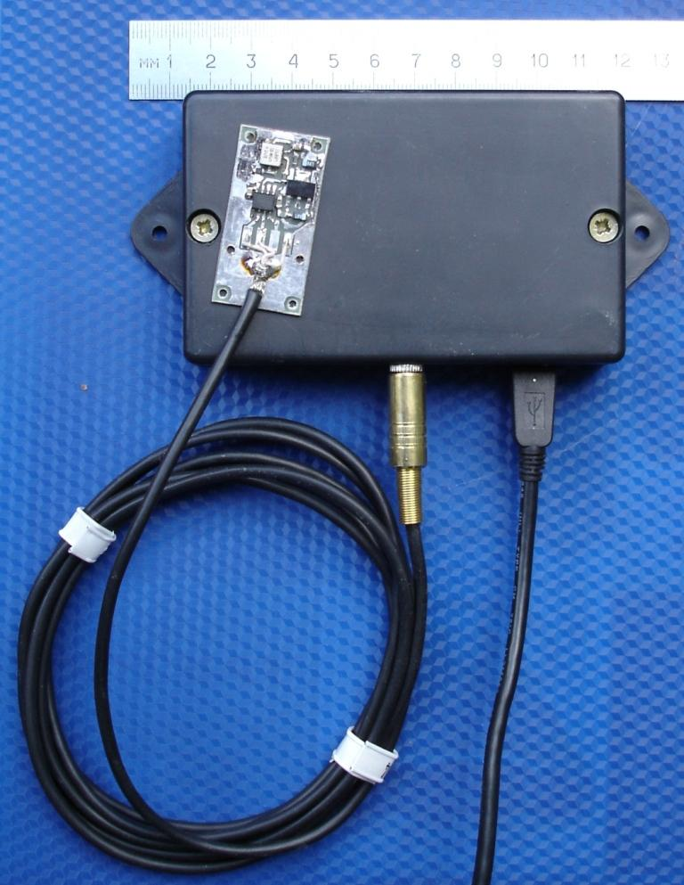
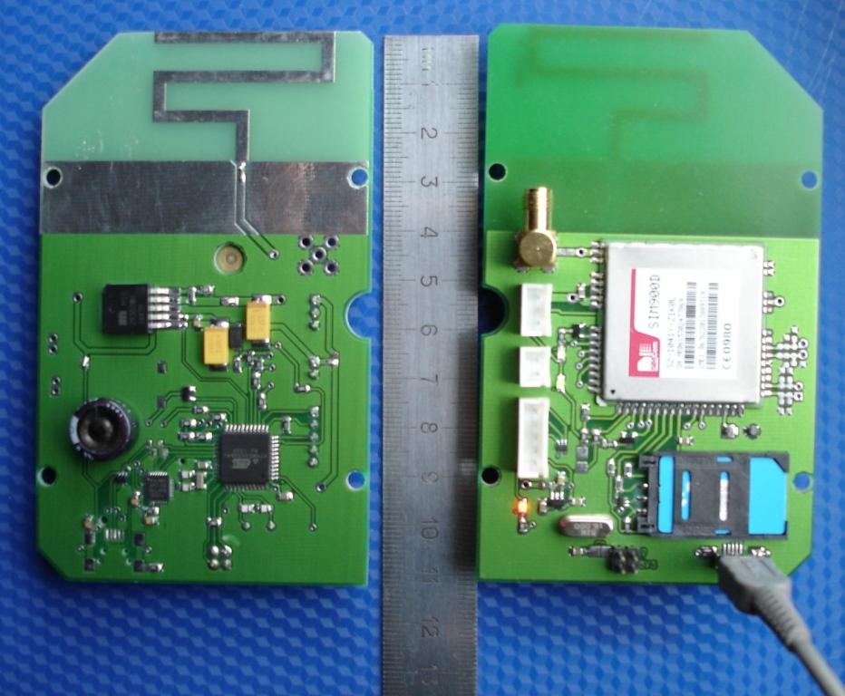
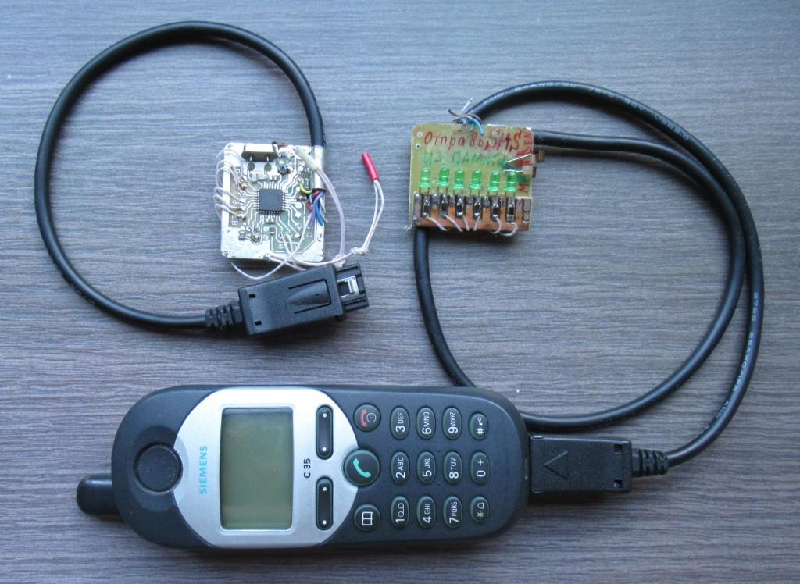
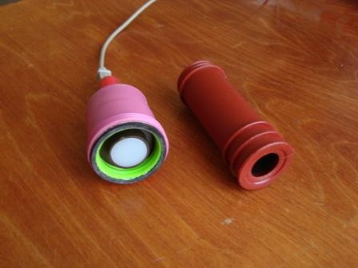
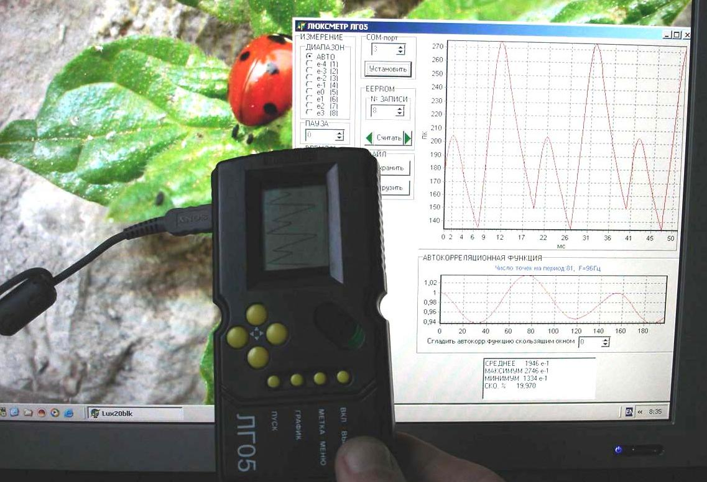
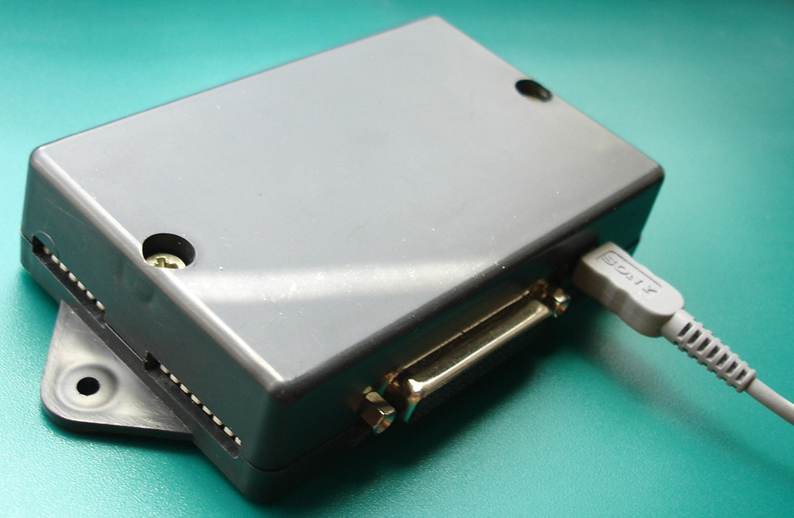
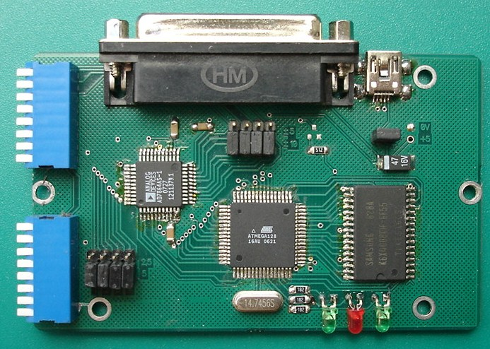
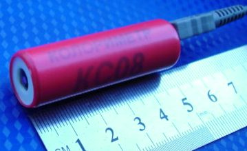

e-mail: post4inet@gmail.com
КАРТИНКИ КЛИКАБЕЛЬНЫ,
ОТКРЫВАЮТСЯ НА ОТДЕЛЬНОЙ
ВКЛАДКЕ
Здесь представлены
некоторые проекты,
которые можно реализовывать в домашних условиях и
адаптировать для
разных задач - для этого обычно достаточно внести изменения в
программное
обеспечение микроконтроллера и в компьютерное приложение.
Универсальные
адаптеры
USB <> I2C/SPI/1Wire/UART

Адаптеры
позволяют без особых усилий организовать подключение датчиков с разными
интерфейсами к USB компьютера (датчики температуры, влажности,
давления, акселерометры, модули GPS, микросхемы последовательной
памяти, часы реального времени и множество других устройств).
Можно выбрать адаптеры на микроконтроллерах STM8S003F3P6, ATmega8A,
ATmega328P, ATmega808 или других совместимых по цоколёвке
микроконтроллерах этих серий - в зависимости от того, с какими
микроконтроллерами предпочитает работать программист, какой объём
памяти требуется.
Собственные
программы могут загружаться в Адаптеры через bootloader по USB - не
требуется программатор (кроме адаптера на STM8S003F3P6 - этот МК
bootloader не поддерживает).
Адаптеры размещаются в малогабаритных корпусах (40 х 17 х 9 мм), чтобы
можно
было предлагать законченное устройство в корпусе.
На сайте с адаптерами
представлены
различные проекты на базе универсальных адаптеров
USB<>I2C/SPI/1Wire/UART:
Управление
адресными светодиодными лентами WS28xx (не Ардуино)

Ленты WS28xx управляются
по однопроводному интерфейсу. Цвет свечения каждого
светодиода ленты выбирается отдельно.
Видео
Управляющие слова передаются компьютерным приложением или хранятся в
памяти микроконтроллера. Есть варианты программ для микроконтроллера на
Ассемблере для максимальной частоты обновления и на C (без ассемблерных
вставок) для облегчения вычислений, связанных с созданием цветовых
эффектов микроконтроллером.
Акселерометры
с аналоговыми выходами
Акселерометры
с
интерфейсами USB, RS-485, Bluetooth
 Акселерометр USB работает при
подключении к USB компьютера стандартным кабелем USB длиной до 1,8м. Видео
Акселерометр USB работает при
подключении к USB компьютера стандартным кабелем USB длиной до 1,8м. Видео
Акселерометр USB с энергонезависимой памятью
256КБайт, может работать
автономно при аккумуляторном питанияя;
при максимальной частоте выборки 3200Гц и 3-х каналах время записи 14с
(с новой ИС памяти до 28с). Видео1,
видео2

Акселерометр RS-485 с адаптером
RS-485 <> USB, может работать с кабелем длиной до 100м. Видео

Акселерометр Bluetooth работает
автономно, питание от аккумулятора, передаёт данные в реальном времени.Видео
Параметры перечисленных
акселерометров: три оси, программный выбор диапазона (варианты:
±2g/±4g/±8g/±16g или ±25g/±50g/±100g/±200g), частоты выборки
(6,25Гц,...,3200Гц), питание автономное (3,7В) или от USB.

Прецизионный
акселерометр (USB или RS-485) с низким уровнем шума, широким
диапазоном и встроенными фильтрами НЧ и ВЧ.
Акселерометры
с аналоговыми выходами, в т.ч. высокочастотные акселерометры
- усилители
обеспечивают работу на длинный кабель, сопротивление нагрузки 200 Ом.
Возможна совместная работа с представленным ниже Синхронным АЦП
12бит,4+4
канала, USB, память 0,5М или с 8-канальным
АЦП 12 бит, память до 240000 выборок, USB-интерфейс,
питание от USB.

Измеритель
для ударных испытаний
транспорта использовался для записи ускорений на испытаниях
железнодорожной цистерны. Видео
Измеритель
для ударных испытаний оборудования
записывал ударные ускорения при испытаниях мотоциклетной защиты и
шлемов.

на плате предусмотрены
- микроконтроллер, управляющий модемом, формирующий запросы к
источникам данных, преобразующий поступающие данные в сообщения,
отправляемые модемом,
- разъём USB для подключения к компьютеру,
- интегрированная антенна / внешняя антенна,
- возможность подключения аккумулятора, установлен ионистор,
- RS-232 / TTL интерфейс для подключения к источнику данных,
- GSM / GPRS передача данных.,
- питание от источника +5В или по USB от компьютера, или от
аккумулятора (подзарядка через
модуль GSM)
Применение:
один модем с группой теплосчетчиков устанавливается на
несколько домов микрорайона.
к каждому модему через преобразователь M-Bus <> RS-232
подключена группа теплосчетчиков с интерфейсом M-Bus.
вариант 1: кодированные SMS с информацией от каждого
теплосчетчика передаются в
центр по запросам,
SMS принимаются, декодируются и пополняют базу данных;
вариант 2: информация от
теплосчётчиков преобразуется в файлы
и передаётся на ftp-сервер;
полный доступ к данным на сервере имеет администратор (формирование
базы данных, счетов для владельцев счётчиков); данные от своих
счётчиков могут запросить владельцы счётчиков.

Мобильный телефон
передаёт и принимает СМС,
- принимаемые СМС декодируются подключенным к телефону
микроконтроллером для управления электрооборудованием;
- к микроконтроллеру подключены контакты, при замыкании которых
микроконтроллер формирует СМС и передаёт его через мобильный телефон на
определённый телефонный номер;
- при звонке на мобильный выполняется прослушивание помещения.

Люксметр
графический ЛГ09
с интерфейсом
USB, 8 диапазоном, частота
выборки до 8,25кГц. Комбинированный светофильтр с характеристиками как
у глаз человека, молочный светофильтр, насадка для измерения яркости.
Данные передаются в компьютер, отображаются в т.ч.
в виде графиков.

Карманный люксметр
с графическим дисплеем ЛГ05,
память на 20 записей (графиков), передача записанных данных по USB.
Комбинированный светофильтр с характеристиками как у глаз человека.
Возможность просмотра графика записанного
сигнала (400 точек) на графическом дисплее, вычисление результата для
выделенного пользователем участка графика.
При
вызове из памяти люксметра записанных массивов воспроизводятся
результаты и графики, полученные в результате
измерений.
Компьютерное приложение
обеспечивает возможность считывания массивов из памяти
люксметра по USB, отображения считанных данных,
хранения и документирования.
Можно скачать компьютерное приложение
с файлами данных, записанных для различных
источников (мониторы, лампы, телевизоры) люксметром
с USB-интерфейсом.
Получилось удачное устройство, как по
конструкции, так и по возможности приспособить
для других целей - под различные измерители,
требующие графического отображения информации,
скажем, легко подключить термодатчик и делать
мониторинг температуры в помещении, или
НЧ-осциллограф, ...
Интересны графики, полученные при проверке люксметром
TFT-мониторов:
при отображении статической
картинки часть TFT-мониторов дает, как и ожидалось,
постоянный световой поток, а часть -
ПУЛЬСИРУЮЩИЙ! Скорее всего на более дешевых
TFT-мониторах установлена подсветка с питанием от
генератора переменного напряжения.
Соответствующие графики приведены на странице Люксметр .
Представление о работе люксметра
можно получить, посмотрев видеообучалки (скачать
архивы menu.rar (941К)
и Measure.rar
(1,19M) ,
в архивах - файлы exe, Flash-плеер не требуется).


Информация
на http://adc-sync.narod.ru/index.html
.
Информация
на http://thermopairs.narod.ru/index.html
. Компенсация холодного спая, частота выборки
до 250кГц / <число выбранных каналов>
Информация
на http://adc-usb.narod.ru/index.html
.

Колориметр
определяет координаты цвета и цветности
несамосветящихся и самосветящихся объектов;
пополняемая пользователем библиотека эталонов,
образцов, локусов, молочных стекол, прогр.обеспечение
колориметра можно скачать (есть
записанный с CRT-монитора файл для
ознакомления). Подробная информация
на http://colorimeter.narod.ru/index.html
Регистраторы
(устройства записи) аналоговых сигналов
Это что-то
вроде цифровых осциллографов с отображением
информации на компьютере, информация о них
находится на отдельных страничках:
Измеритель
2-х температур
Устройство
сделано для дизельного автомобиля (Volkswagen), как
сказал заказчик, при запуске нужно знать
температуру снаружи, а температура в салоне -
чтобы была. Используется 2 термодатчика и два
индикатора температуры по 3 десятичных разряда,
плюс 2 светодиода для индикации знака "-".
Плата
индикаторов 46 х 31мм, плата с микроконтроллером 42
х 36мм (требования заказчика под место в приборной
панели), питание от автомобильного аккумулятора
12В-15В (возможно питание от +5В).
Если один
из термодатчиков "замочить", можно измерять
относительную влажность (потребуется добавить
программу c алгоритмом пересчета показаний сухого
и мокрого термодатчиков в относительную
влажность).
Электретный
микрофон, наушник от mp3-плеера, плата 27х7мм - вешается прям на ухо
(как лапша). Представлены схема, конструкция.
и продолжение:
Видео:
тест: ширины дорожек и зазоров 0,1мм и меньше, тест принтеров
(разрешение 600 и 1200 dpi). На
примере платы для гарнитуры в фотографиях представлена
последовательность изготовления ДВУСТОРОННЕЙ печатной платы. Особое
внимание уделено совмещению обоих слоев, качеству травления.
Терморегулятор
 Устройство
сделано для
регулировки температуры на даче, используется
для предварительных температурных испытаний
электронной аппаратуры в условиях лаборатории в
самодельном термостате - ну, очень удобно: в
термостат бросается только датчик, все
регулировки снаружи, нагреватель (лампочка)
погас-включился - записывай температуру, снимай
показатели испытываемой аппаратуры.
Устройство
сделано для
регулировки температуры на даче, используется
для предварительных температурных испытаний
электронной аппаратуры в условиях лаборатории в
самодельном термостате - ну, очень удобно: в
термостат бросается только датчик, все
регулировки снаружи, нагреватель (лампочка)
погас-включился - записывай температуру, снимай
показатели испытываемой аппаратуры.
Предыдущее
устройство было сделано на терморезисторе и
сдвоенном операционном усилителе, но изменять
желаемую температуру с помощью подстроечного
резистора, подбирать резистор для обеспечения
гистерезиса было довольно хлопотно.
 Представленный
контроллер довольно прост, выполнен на МК Attiny26 и
светодиодном дисплее на 3 десятичные цифры, на
котором температура индицируется в формате XX.X
Представленный
контроллер довольно прост, выполнен на МК Attiny26 и
светодиодном дисплее на 3 десятичные цифры, на
котором температура индицируется в формате XX.X
Тремя
кнопками можно установить температуры ВКЛЮЧЕНИЯ
и ВЫКЛЮЧЕНИЯ нагревателя (одной кнопкой
производится выбор режима: <индикация
температуры в помещении> – <установка
TºC
включения> – <установка TºC выключения>,
кнопкой <+> увеличивается, а кнопкой <->
уменьшается значение температуры в режимах
установки ТºC).
ИС DS18B20,
используемая в качестве термодатчика,
подсоединяется лишь двумя проводами в несколько
метров длиной к контроллеру. DS18B20 представляет
собой ИС с последовательным интерфейсом в
корпусе TO-92. Ошибка измерения температуры
составляет менее ±0.5ºC в диапазоне -10ºC…+85ºC и ±2ºC в
диапазоне -55ºC…+125ºC без дополнительной
калибровки.
Контроллер
коммутирует напряжение сети 220В на гальванически
развязанную нагрузку (нагреватель), обеспечивая
ток до 4А (на даче используется устройство
поджига газа, потребляющее мене 40Вт).
Интерес
скорее представляет конструкция устройства: все
компоненты (печатная плата контроллера с
индикатором, опторазвязкой, симистором,
стабилизатором и трансформатором питания), за
исключением вынесенной на проводах ИС
термодатчика, размещены в корпусе сетевого блока
питания с сетевой вилкой, сбоку корпуса
находится розетка для подключения нагрузки.
Индикатор и отверстия для доступа к кнопкам
находятся на задней стенке корпуса. Все, что
требуется - прорезать окно для индикатора, 3
отверстия для доступа к кнопкам и 3 паза внутри
корпуса разогретым паяльником.
"Алмаз", ПРОГРАММАТОР микросхем памяти, в т.ч.
использующихся в
бортовых компьютерах автомобилей.
 Программатор
разработан для станций обслуживания
автомобилей. Он имеет простой и понятный для
пользователей интерфейс и позволяет считывать и
записывать программы в ПЗУ, использующиеся в
качестве памяти программ в бортовых компьютерах
автомобилей, а также организовать базу данных
файлов с индивидуальными настройками для
конкретных автомобилей. Список программируемых
ЗУ: AM27C010 AM27C256 AM27C512 AM28F010 AM29F010 AT27C256 AT27C512
M27256 M27512 M27C256
M27C512 SST29EE010 SST29EE512 W27C257 W27C512 W29EE011 W29EE512.
Программатор
разработан для станций обслуживания
автомобилей. Он имеет простой и понятный для
пользователей интерфейс и позволяет считывать и
записывать программы в ПЗУ, использующиеся в
качестве памяти программ в бортовых компьютерах
автомобилей, а также организовать базу данных
файлов с индивидуальными настройками для
конкретных автомобилей. Список программируемых
ЗУ: AM27C010 AM27C256 AM27C512 AM28F010 AM29F010 AT27C256 AT27C512
M27256 M27512 M27C256
M27C512 SST29EE010 SST29EE512 W27C257 W27C512 W29EE011 W29EE512.
Здесь можно скачать
демонстрационную версию ПО ПРОГРАММАТОРА
для РС.
Проект
2003 г., у меня были большие сомнения в его целесообразности - на
радиорынке было много программаторов ЗУ.
 Но, очевидно, заказчик точно знал, зачем
это ему нужно: недавно
попалась ветка в
форуме - до сих пор хорошие отзывы.
Но, очевидно, заказчик точно знал, зачем
это ему нужно: недавно
попалась ветка в
форуме - до сих пор хорошие отзывы.
Вероятно, дело и в требованиях
заказчика к ПО, и в целевой аудитории, и
в поддержке множества значений напряжений, указанных в даташитах на все
программируемые микросхемы - от 3,75В до 14В.
Например, на фото
выбрана микросхема, для работы с которой требуется четыре значения
напряжения: 5В, 12В (программирование), 14В
(стирание) и 3,75В (проверка стирания).
BinSoft:
программа для тьюнинга ЭСУД (электронных систем
управления двигателем)
ПРОГРАММА BinSoft обеспечивает
тьюнинг
инжекторных двигателей коррекцией программного
обеспечения бортовых компьютеров
автомобилей. Программа позволяет изменять
параметры Электронных систем управления
двигателем (ЭСУД), хранящиеся в
программном обеспечении (ПО) бортового
компьютера автомобиля (в ПЗУ).
ПО может быть считано из ПЗУ описанным вышее программатором,
сохранено в виде файла, файл корректируется
программой BinSoft, после сохранения снова
записывается в ПЗУ с помощью программатора.
Тип исходного программного обеспечения
определяется автоматически, в том числе и для уже
корректировавшегося программного обеспечения.
Корректируется ПО для разных модификаций Электронных
систем управления двигателем (ЭСУД)
Bosch, Январь, VS5
Контроллер
балансировки вращающихся объектов
Контроллер
балансировки вращающихся объектов, таких, как
роторы двигателей. Для балансировки
используется стенд с мягкой подвеской и
акселерометр, а также круг стробоскопа с
угловыми метками для определения направления
дисбаланса. Круг вращается вместе с ротором.
Балансируемый объект раскручивается до 2000...3000
оборотов в минуту, сигнал, образующийся на выходе
акселерометра, пропорционален величине
виброускорения. Этот сигнал, возникающий из-за
несбалансированности вращающегося объекта,
усиливается и подается на контроллер. Контроллер
определяет частоту сигнала (частоту вращения
ротора), а амплитуда сигнала, пропорциональная
преобразуемому акселерометром виброускорению,
пересчитывается в вибросмещение,
пропорциональное несбалансированной массе
объекта. Направление дисбаланса на круге с
угловыми метками указывает импульсная
светодиодная подсветка, управляемая
контроллером. На индикаторе отображается
амплитуда вибросмещения, при нажатии кнопки
"Частота" отображается частота вращения.
Балансировочная масса, пропорциональная
вибросмещению, добавляется в направлении,
противоположном направлению дисбаланса. Хотя
направление дисбаланса массы соответствует
максимальному значению сигнала, (это направление
смещено на 90 градусов относительно нуля
(перехода сигнала, пропорционального
виброускорению, через ноль), в контроллере
предусмотрена возможность изменения углового
смещения подсветки круга стробоскопа от 0 до 359-ти
градусов с шагом в 1 градус относительно нуля
градусов (переход сигнала через ноль). Угол
смещения подбирается кнопками и запоминается в
контроллере для конкретного стенда. Таким
образом, на круге можно задать вместо подсветки
направления дисбаланса подсветку направления, в
котором следует добавлять балансировочный
грузик. Возможно перепрограммирование
контроллера на индикацию угла дисбаланса без
стробоскопа. В этом случае понадобится датчик
или метка (оптическая, магнитная, ...) вместо круга
стробоскопа.
8-канальный контроллер
весоизмерителя.
Конечно, устройство может быть использовано не
только совместно с тензодатчиками,
предназначенными для измерения веса, но и с
другими датчиками. Сигналы от датчиков могут
быть как униполярными, так и биполярными,
максимальные входные напряжения АЦП,
соответствующие полной шкале, могут выбираться
из ряда 20мВ, 40мВ, 80мВ, 160мВ, 320мВ, 640мВ, 1,28В, 2,56В. В АЦП
используется цифровая фильтрация, снижающая
помехи частотой 50Гц.
Отличительные особенности разработанного
устройства
в использовании для каждого подключаемого тензодатчика отдельного
дельта-сигма АЦП,
количество подключаемых датчиков выбирается пользователем (от 1-го
до 8-ми),
передача данных от каждого АЦП в блок индикации- по RS485 на
расстояние порядка 100м,
возможность линеаризации характеристик тензодатчиков по нескольким
точкам (здесь по 4-м), для этого к блоку индикации на время калибровки
подключается клавиатура (13 клавиш: 10 цифр, десятичная точка, ВВОД,
ОТМЕНА), на калибруемый датчик устанавливается образцовый груз 1, с
клавиатуры вводится его вес, то же повторяется для грузов 2, 3, 4, по
установленным весам и введенным значениям автоматически определяются
коэффициенты, используемые для отображения веса в штатном режиме,
одновременно к индикатору могут подключаться датчики разных типов
с разными параметрами, индикатор отображает сумму сигналов от каждого
из датчиков, каждый из которых домножается на свой индивидуальный
коэффициент.
Устройства для измерения, управления и
контроля:
если следующие ссылки блокируются,
воспользуйтесь VPN:
USB-АЦП 12
разрядов, частота
выборки 1МГц, память 0,5МБайт
USB-контроллер
8-ми
термопар/USB-АЦП 12 разрядов, 8 каналов, память 0,5МБайт
синхронный
USB-АЦП 4+4 канала,
входы ток/напряжение, переключаемые нагрузки для токовых входов, 12
разрядов, 0,5МБайт память
люксметр
с
USB-интерфейсом
колориметр
(измерение цвета
и
цветности)
прочие
устройства